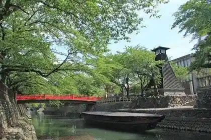
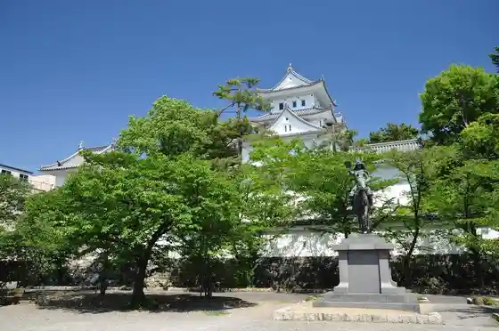
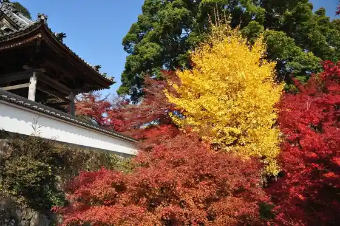

Yoro Tetsudo
Ogaki, Gifu · 0584-78-3400 · Official / source link
Kaga no Hachimanjinja Ido
Ogaki, Gifu · 0584-81-4111 · Official / source link
Oku no Hosomichi Musubi no Chi (Sumiyoshi Todai Fune Town Minato)
Ogaki, Gifu · 0584-81-4111 · Official / source link

Ogaki Shiro
Ogaki, Gifu · 0584-74-7875 · Official / source link

En Kyo Tera no Autumn Leaves
Ogaki, Gifu · 0584-47-8597 · Official / source link

Tara Kyo no Autumn Leaves
Ogaki, Gifu · 0584-47-8597 · Official / source link
Ogaki Festival
Ogaki, Gifu · 0584-77-1535 · Official / source link
Masu Kobo Masuya
Ogaki, Gifu · 0584-78-5468 · Official / source link
Mizu no Miyako Ogakitarai Fune
Ogaki, Gifu · Official / source link
Mizu no Miyako Ogaki Fune Kudari
Ogaki, Gifu · Official / source link
Sunomata Ichiya Shiro Saikawa Tsutsumi Cherry Blossoms
Ogaki, Gifu · 0584-81-4111 · Official / source link
Ogaki Oku no Hosomichi Musubi no Chi Memorial Museum
Ogaki, Gifu · 0584-84-8430 · Official / source link
Mino Michi Ogaki Yado Honjin Ato
Ogaki, Gifu · 0584-81-4111 · Official / source link
Kin Nama Yama Himehotaru
Ogaki, Gifu · 0584-71-0124 · Official / source link
Kamiishizu Local History Museum
Ogaki, Gifu · 0584-45-3639 · Official / source link
Historic Site Nishiko Ki Ie Jinya Ato
Ogaki, Gifu · 0584-45-3639 · Official / source link
Sunomata Saikawa Tsutsumi
Ogaki, Gifu · Official / source link
Ogaki Kyodo Kan
Ogaki, Gifu · 0584-75-1231 · Official / source link
Sunomata Ichiya Shiro
Ogaki, Gifu · 0584-62-3322 · Official / source link
Watanabe Shuzo Jo
Ogaki, Gifu · 0584-78-2848 · Official / source link
(Kabu) Miwa Shuzo
Ogaki, Gifu · 0584-78-2201 · Official / source link
Takeuchi Shuzo (Shi)
Ogaki, Gifu · 0584-81-3311 · Official / source link
Ayu Ryori Senmonten Juroku Cho
Ogaki, Gifu · 0584-91-1980 · Official / source link
Uzu Saka Shimazu Toyohisa Hi (Shimazu no Shirizoki Kuchi Yukari no Chi)
Ogaki, Gifu · Official / source link
Ruri Hikari Zendera (Shimazu no Shirizoki Kuchi Yukari no Chi)
Ogaki, Gifu · 0584-45-2118 · Official / source link
Chojuin Moriatsu no Haka · Rin Mitsudera
Ogaki, Gifu · Official / source link
Shiro Hyoshi Tani (Shimazu no Shirizoki Kuchi Yukari no Chi)
Ogaki, Gifu · Official / source link
Shimazu Tsuka (Shimazu no Shirizoki Kuchi Yukari no Chi)
Ogaki, Gifu · Official / source link
Takara Hikari In (Hidarime Fudo)
Ogaki, Gifu · 0584-91-8326 · Official / source link
O Chaya Yashikiato (Akasaka Botan Sono)
Ogaki, Gifu · Official / source link
Kuise Kawago Senjo
Ogaki, Gifu · Official / source link
Sone Castle Ruins
Ogaki, Gifu · 0584-81-7535 · Official / source link
Kabuto Tsuka
Ogaki, Gifu · Official / source link
Akasaka Minato Ato
Ogaki, Gifu · Official / source link
Akasaka Yado Honjin Ato Honjin Park
Ogaki, Gifu · Official / source link
Nagamatsu Castle Ruins
Ogaki, Gifu · Official / source link
Kashihara Castle Ruins Tsushima Shrine
Ogaki, Gifu · Official / source link
Genpei Sunomata Kawago Senjo Gien Park
Ogaki, Gifu · Official / source link
Gongen no Zoki
Ogaki, Gifu · Official / source link
Mino Michi Sunomata Yado Wakimoto Jin
Ogaki, Gifu · Official / source link
Mino Michi Sunomata Yado Honjin Ato
Ogaki, Gifu · Official / source link
Mino Kokubunji
Ogaki, Gifu · 0584-91-0297 · Official / source link
Ogaki Tami Hall
Ogaki, Gifu · 0584-89-1111 · Official / source link
Mino Michi
Ogaki, Gifu · 0584-47-8597 · Official / source link
Ogaki Himawari Hatake 2026 (Taira Town)
Ogaki, Gifu · Official / source link